|
I currently work at Mohamed bin Zayed University of Artificial Intelligence (MBZAUI), UAE as a research assistant supervised by Dr. Muhammad Haris Khan , of MBZUAI and Dr. Daniel Harari of Weizmann Institute of Science, Israel . My current research is on self supervised learning in videos and network calibration. Apart from that, I am working at Institute of Fundamental Technological Research POLISH ACADEMY OF SCIENCES (IPPT-PAN), Poland as a researcher supervised by Dr. Norbert Zolek working on a supporting system for diagnosis of breast cancer lesions using ultrasonography and machine learning I completed my Bachelor’s of Science (Hons) Degree from the Department of Electronics and Telecommunication Engineering, University of Moratuwa, Sri Lanka in 2021 specialized in Biomedical Engineering My research interests are in computer vision, medical imaging and self-supervised learning. |
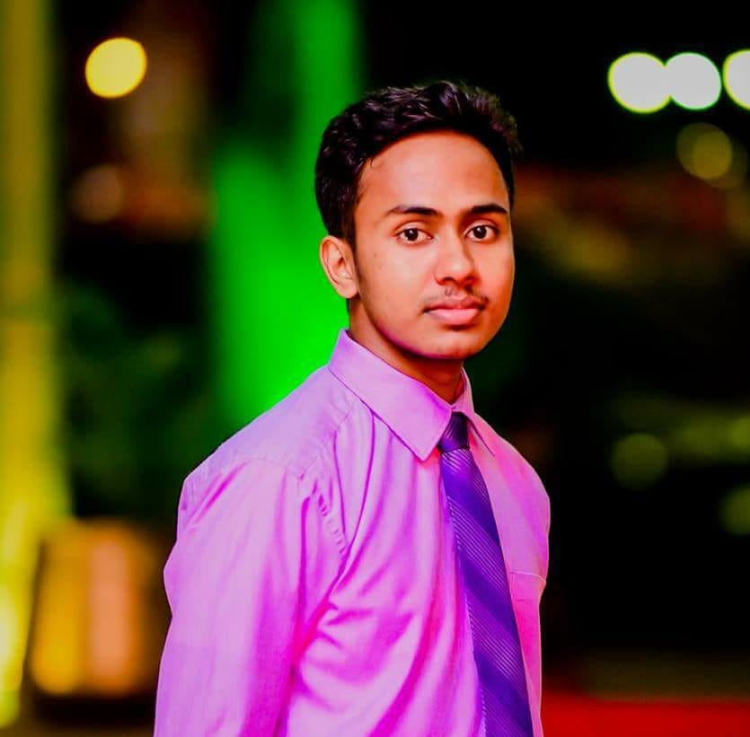 |
{kind=link}
News
- March 2023: Our paper accepted at CVPR 2023 conference
- September 2022: I started working as a Research Assistant in MBZUAI
- September 2022: I started working as a Researcher in IPPT-PAN
- July 2021: Graduated from University of Moratuwa, Sri Lanka.
- July 2019: Joined Synergen Technology Labs - as a research engineer
Publications
| 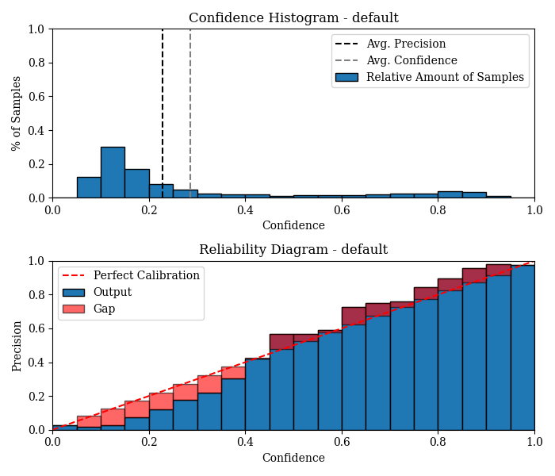 |
Bimsara Pathiraja,Malitha Gunawardhana,Muhammad Haris Khan CVPR 2023 A novel train time calibration method for object detection. |
| 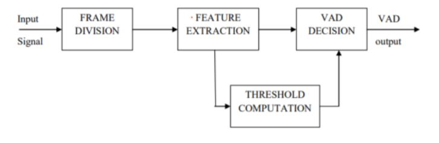 |
M. Gunawardhana, C. Navanjana, D. Fernando, N. Upeksha, A. de Silva IEEE SSP - 2023 compares the performance of wavelet transformation of ten wavelet families with soft and hard thresholding methods against adaptive filters. |
Projects
| 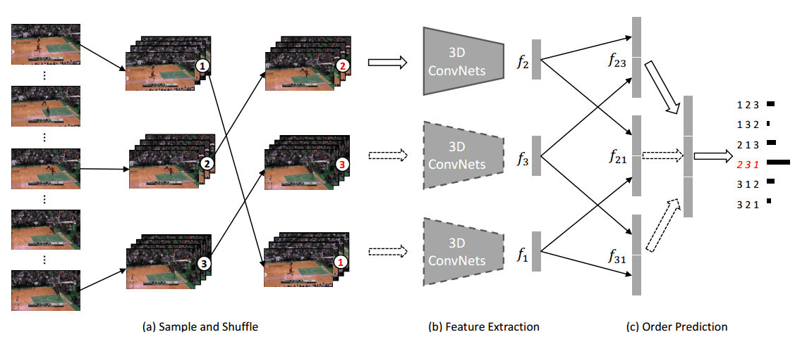 |
This project aims to develop computational models for the spontaneous acquisition of infant-level perceptual understanding from realistic data in an unsupervised manner, similar to the development of such capabilities in early childhood. In the end, the developed system will be able to learn, powerful and robust visual representations. As the first step of the project, currently I am working on evaluating available SOTA self-supervised learning methods in different datasets. This project is supervised by Dr. Muhammad Hari Khan at MBZUAI and Dr. Daniel Harai at Weizman Institute of Science, Israel. |
| 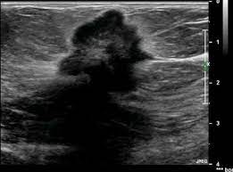 |
I am working in the INFOSTRATEG project: A supporting system for diagnosis of breast cancer lesions using ultrasonography and machine learning, supervised by Dr. Norbert Zolek. |
| 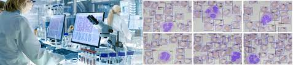 |
This project aimed to estimate the density of various blood cell types based on visual data acquired by the HemoScope device which is developed by LiteBC (project partner). The videos/images were analyzed and transformed into single numbers representing the quantities of various parameters: white blood cells count, red blood cells count, haemoglobin levels, etc. The training and testing processes were based on both annotated data and results of traditional blood tests. Finally, blood count results were given in 30 seconds non-invasively. |
| 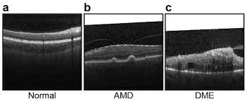 |
This project investigated the opportunity to explore the ML solution to detect the retina deformation and supporting the Diabetic Macular Edema (DME) identification. After preprocessing the images, we extracted the nerve fibre layer (above area of the retina) and coefficient of the it’s curve using vertical projection since it is the most significant of detecting DME. Those coefficients were used to train different models and xgboost method gave the best results. Different experiments were conducted to find the best model. The performance of the solution was tested using the various healthy and DME data. I worked as a ML engineer and lead the model building task |
| 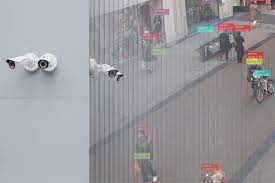 |
At PromiseQ, I developed state-of-the-art algorithms/models for object detection in CCTV applications. I was mainly focused on removing false alarms and improving the accuracy of the overall system using novel advanced methods. |
| 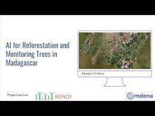 |
I worked on developing a machine learning-based model using satellite images that will allow monitoring more effectively the land reforest. AI model(s) will be trained using remote sensing data and the models will be able to detect the trees and determine the biomass of land given an image. In the end, the model will provide an estimation of the number of individual trees in a particular area. I was the task lead of the model building and testing task in given time frame. Project video can be found here |

|
I developed a machine learning model to predict blood glucose level using non invasive method. Bio impedance, skin thickness, melanin level and heart rate were taken as the physiological parameters and real blood glucose level was used as the reference value. Machine learning model was trained to obtain the bias values and constant value. Skin related parameters can be used to remove individual biases. |
| 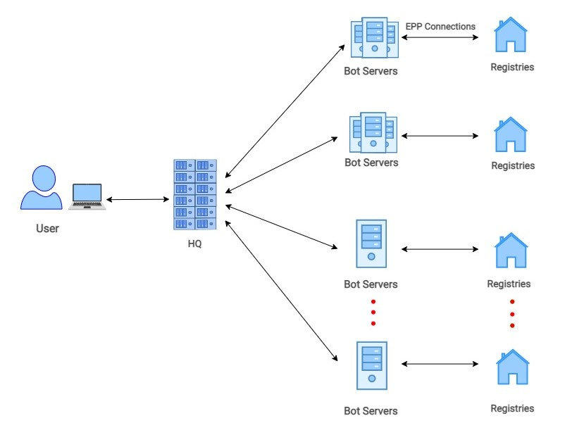 |
I was a key member (then the team leader) of a team that developed a state-of-the-art domain drop catcher which uses a data-driven intelligent approach to identify and catch the most valuable domains. Distributed drop catcher consists of hundreds of concurrent bots that run at speeds less than a microsecond to achieve very high drop catching rates. The algorithm achieved superior real-time performance compared to the state-of-the-art algorithms. |
| 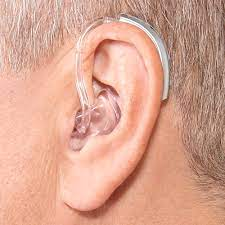 |
As for the final thesis, we developed a prototype of a behind the ear hearing aid which enhances speech in noisy environments as the first phase of manufacturing hearing aids in Sri Lanka with the help of Wickramarachchi Institute of Speech and Hearing. I mainly worked in the algorithm development where I built algorithms using MATLAB for noise reduction using Wavelet transform, feedback reduction using adaptive filters and frequency shaping. |
| 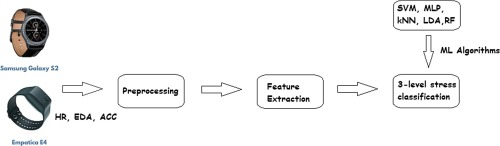 |
In my internship at Synergen Technology Labs, I completed the first stage of wearable device to detect human stress using a wearable device. Algorithms were implemented to get readings from physiological signals such as gsr, skin temperature, heart rate, body acceleration and get a value for stress. Machine learning model was used to identify the type of the stress as relax, cognitive stress, emotional stress, and physical stress. |
| 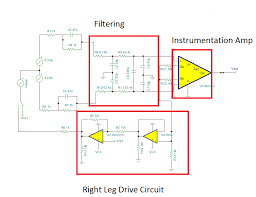 |
Developed an electronic circuit to detect ecg signals from hand. The circuit was designed to remove noise at the circuit level. AdaFruit feather the board was used to transmit signals to MATLAB software. |
Experience
| 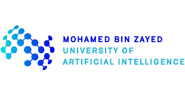 |
Research Assistant September 2022 - Present |
|
Researcher Engineer September 2022 - Present |
|
Machine Learning Engineer May 2022 - Present |
|
Research Machine Learning Engineer Jun 2022 - Nov 2022 |

|
Software Engineer Mar 2021 - May 2022 |
|
Research Engineer Jun 2019 - Dec 2019 |
Education

|
Bachelor's in Science Engineering (Hons) specialized in Biomedical Engineering. November 2016 - July 2021 |
Research and Community Talks
- IEEE EMBS Student Branch Chapter at the UoM (Jan, 2023): facilitated a workshop at Brainstorm 2023, the foremost biomedical competition in Sri Lanka, on the topic of utilizing AI in healthcare projects
- IEEE Young Professional Sri Lanka (Dec. 2022) : delivered a session for ”AI-Driven Sri Lanka,” an IEEE Young Professional Sri Lanka initiative, focusing on the application of AI in healthcare.
Services and Leadership
- Department of Electronic and Telecommunication, University of Moratuwa (UoM), Sri Lanka: Department Representative (2017-2018), Conducting Robotics Workshops for school children
- IEEE Engineering in Medicine and Biology Student Branch Chapter at UoM: An advisor and paper reviewer for the ISC 2021 Moratuwa — IEEE EMBS Conference 2021,Council Member – 2020-21
- Rotaract Club of UoM and Rotaract Club of Alumni of UoM: Vice President - Club Service (2022-2023), Club Service Director (2021-2022), Spirit of Service Award 2017,2018 and 2020
Misc.
- I maintain awesome-video-self-supervised-learning on Github. Drop a message if you would like to contribute.
- Join me on Medium for my latest writings. Subscribe if you like.